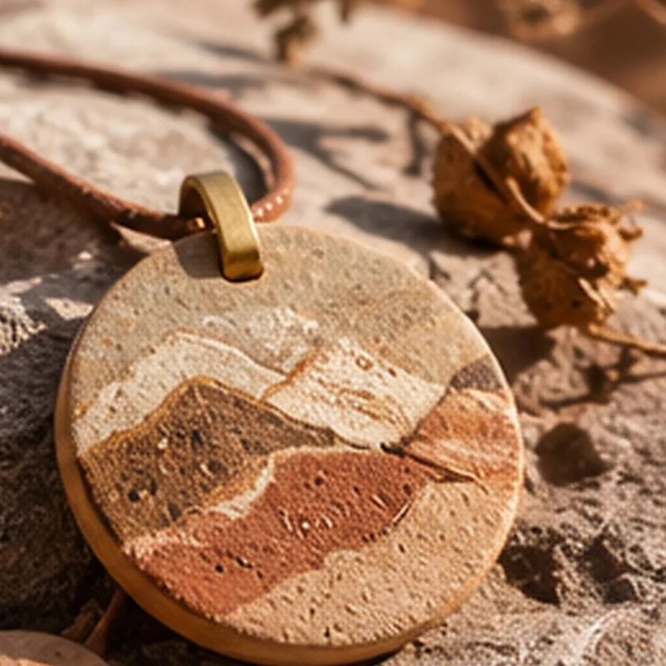

Proyecto artístico y cultural · Romina Páez
Objetos, imágenes y relatos que nacen de los paisajes argentinos
Territorios Invisibles de Argentina vincula paisaje, memoria e identidad territorial en colecciones de objetos de contemplación, cada una con la historia de su lugar.

- Público general
- Instituciones culturales
- Municipios
- Organismos de turismo y cultura
- Aliados estratégicos

Un paisaje también es lo que se recuerda de él
Lo invisible de un territorio es lo que se sabe sin verlo: el color de una tierra, la memoria de un camino.
Cada colección parte de un territorio: sus colores, sus materiales y las historias de quienes lo habitan. Los objetos guardan ese vínculo y un código QR lo vuelve a abrir.
Un atlas que se escribe territorio por territorio
Índice de territorios
El atlas está pensado para crecer: cada territorio nuevo suma su lámina, su relato, su paleta y su colección.
Recorré los territoriosCuatro formas de llevarse un paisaje
-

Lámina 03 Cerámica Cerámica de tierra
Piezas de barro con los perfiles de los cerros pintados en tonos de la región.
-

Lámina 04 Textil Textiles andinos
Tejidos en tonos de tierra, con las franjas y los flecos del telar.
-

Lámina 05 Piedra Objetos de contemplación
Piedras y minerales trabajados como pequeñas láminas del paisaje.
-

Lámina 06 Fotografía Fotografía e historias
Imágenes del territorio acompañadas por el relato del lugar.
Cada objeto trae su lugar consigo
Un código QR acompaña cada pieza. Al escanearlo se abren las fotografías, la historia del lugar y los contenidos complementarios del territorio.
- 1Escaneás el código con la cámara del celular.
- 2Se abre la página del territorio de tu objeto.
- 3Recorrés sus fotos, su relato y sus contenidos.

Para instituciones, municipios y organismos de turismo y cultura
El proyecto busca aliados para sumar territorios, difundir su patrimonio y crear colecciones con identidad local.
- i.
Sumar un territorio
Llevar el paisaje y la memoria de una región al atlas, con su colección y sus relatos.
- ii.
Muestras y exposiciones
Presentar las colecciones y sus fotografías en espacios culturales.
- iii.
Contenidos para turismo
Relatos y piezas que invitan a conocer el lugar detrás de cada objeto.
- iv.
Propuestas con actores locales
Colecciones pensadas junto a quienes viven y trabajan en cada territorio.
¿Tu territorio tiene una historia para contar?
Atlas en curso Territorios Invisibles de Argentina